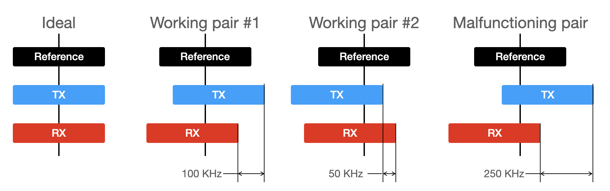
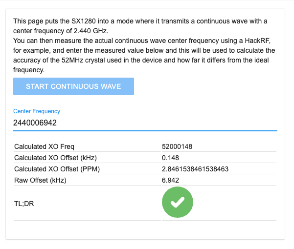
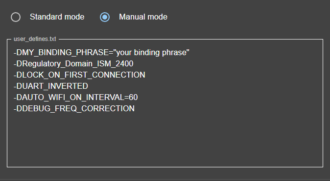
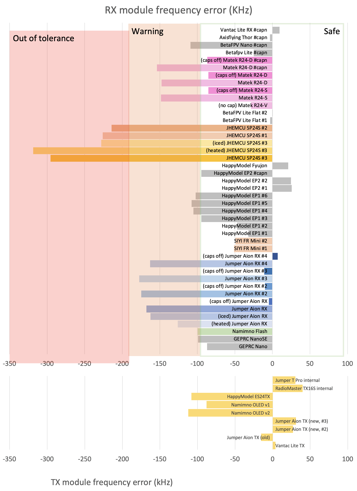
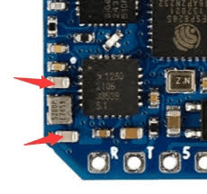
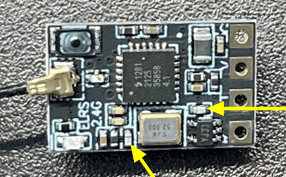

Crystal Oscillator (XO) Frequency Error
Principle¶
ExpressLRS TX and RX modules generate RF signals based on an external clock source, such as a crystal oscillator (XO). For example, an ExpressLRS 2.4GHz module has an SX1280/1281 RF transceiver chip with a 52 MHz XO. Theoretically, XO is desired to be 52 MHz exactly to generate an accurate 2.4GHz RF signal. However, a real-world XO has deviation for various reasons, such as manufacturing error and ambient temperature.
Real-world TX and RX modules deviate from the reference frequency, depending on the quality of XO used and circuit design. Despite that, if the frequency difference is within a certain threshold, they can communicate with each other (working pairs #1 and #2 in the picture). However, the last malfunctioning TX/RX pair will not communicate. In ELRS 2.4GHz@500Hz, the threshold is around 190 kHz.

This issue may affect both 2.4GHz and 900MHz units. To compensate for this, 900MHz modules do online frequency correction, which tunes the RX frequency automatically to the TX unit once connected. Even in this case, if the TX/RX frequency error is too large to make any connection, the frequency correction won't help. 2.4GHz modules are more vulnerable to frequency error because they can't do frequency correction due to some technical issues, which has risks of a connection drop due to frequency drift from the change of unit temperature.
Recommendation to ELRS hardware manufacturers¶
- For SX1280/1281, USE 52 MHZ XO RATED 10 PPM TOLERANCE, 10 PF LOAD CAPACITANCE.
- Do not add unnecessary extra load capacitors. If you add the extra caps for the frequency fine-tune, please VERIFY THE FREQUENCY ACCURACY WITH YOUR FINAL PRODUCT (for every new batch). The detailed procedure is described in this document.
The ultimate solution -- TCXO¶
TCXO (Temperature Compensated Crystal Oscillator) is a special kind of crystal oscillator, which equips a temperature-compensation circuit inside the package. Unfortunately, TCXO could not be a drop-in replacement for a normal XO, as it requires additional circuitry and needs a redesign of the module. Please refer to SX1280 reference design (part 15.2, Application Design with optional TCXO) to apply.
The advantage of TCXO over a normal XO is its frequency accuracy and stability. Usually, the frequency tolerance of a TCXO is <2 ppm, while the error of a good XO is limited to about 10 ppm. While a good XO is totally fine for ELRS operations (it can tolerate up to 50 ppm relative errors), a TCXO could be a silver bullet to eliminate the frequency offset issue entirely.
Frequency error measurement¶
So far, we have established two ways of measuring the XO frequency error:
- Absolute
- Relative
Measuring absolute XO error (not for everyone)¶
Note
This procedure requires a special instrument, which is not expected of a regular ELRS user.
The current ELRS master branch (after PR #1785) equips a test-tone mode. After flashing a TX/RX unit with master branch, get into WiFi update mode, and access http://10.0.0.1/cw.html which should look like the figure below:

By clicking the START CONTINUOUS WAVE button, the unit will generate a continuous wave at 2440 MHz. By measuring the output frequency with a spectrum analyzer (e.g., HackRF SDR), you can determine how the XO deviates from the reference frequency (2440 MHz). Within 20 ppm (=~50 kHz) absolute error over the entire working operating temperature (from -20 to 85 degC) is expected for a good unit. Up to 40 ppm error (=~100 kHz) is acceptable.
Caution: don't use Continuous Wave mode for longer periods of time to avoid excessive heat up of the RF unit.
Measuring relative XO error between a TX-RX pair¶
You'll need to use "Manual mode" in the configurator to enable a special debug mode. In addition to this debug mode flag, you should add any other user defines you need to get your TX/RX to connect (check the user defines section).
For example, this might look like (which is safe to just copy-paste in general):

-DMY_BINDING_PHRASE="frequency_test"
-DRegulatory_Domain_ISM_2400
-DLOCK_ON_FIRST_CONNECTION
-DUART_INVERTED
-DAUTO_WIFI_ON_INTERVAL=60
-DDEBUG_FREQ_CORRECTION
Procedure¶
- Using the configurator and user defines, include the
-DDEBUG_FREQ_CORRECTIONdefine for BOTH TX AND RX builds of any version of ELRS past v3.0.0 (i.e. V3.0.0 RC2) - After loading the new firmware on both TX and RX, go to the telemetry screen in your model settings on the TX side. Note the "RSNR" value. This is the relative difference between your TX and RX clocks.
- The closer this value is to 0, the better!. Negative means the RX clock is slower than TX, and positive means that it is faster.
- ± 20 ticks (~30 kHz offset) is nearly perfect. ±60 ticks (~95 kHz) will still likely be completely fine, though not ideal. ±70 ticks and further is marginal and might be fine, but you should be careful.
- The TX-RX pair can communicate up to about 110 ticks (~170 kHz). However, because you'll want some safety margin, DO NOT USE the gears with ±90 ticks of error.
Measuring ticks¶
The tick value that appeared in the RSNR field is a scaled value of the frequency offset, and here is the conversion formula:
\(Freq_{kHz} = Tick \times 1.575\)
For example, if you got the tick value of 30, the frequency offset between your TX and RX is \(30 \times 1.575 = +47.25_{kHz}\), and this means your receiver is generating 47.25 kHz higher frequency than your TX.
Measuring absolute error¶
When one unit in the measured pair uses TCXO with good error tolerance (desirably <1 ppm) as the SX1280 clock source, the measured ticks will represent the absolute error of the counterpart unit.
ELRS TX/RX error measurement samples¶
We measured the frequency deviation of RX modules from various makers and samples, using the absolute method mentioned above. In the graph, 0 is the reference frequency, and the amount of frequency deviation is shown as the bars. Closer to zero is better. More than 200 kHz deviation is considered to be out of tolerance. Please note that they are only a few samples acquired by the devs, which may not represent the entire product batches.

There are a few interesting points in the graph.
1 All three samples from JHEMCU have significantly deviated more than other makers. A TX module at the reference frequency will not bind to JHEMCU #3 (yellow bars). Also, a TX module with a slight positive frequency deviation will not bind to JHEMCU #1 and #2 as well. 2 Ambient temperature changes the operating frequency of a module. In the graph, Jumper Aion RX (blue bars) and JHEMCU #3 (yellow bars) were chilled and heated, and their operating frequencies were changed around +- 50 kHz. 3 A few makers added extra load capacitors to XO, which lowered their operating frequencies. In this graph, Matek (pink and green bars) and Jumper (blue bars) modules were shipped with the extra load caps. Removing them shifted the frequency to the higher side. 4 Overall frequency errors tend to shift toward the negative side. This might be caused by using XO designed for 8pF load, while the internal load capacitance of SX1280 is 10 pF.
To conclude, XO frequency error is unavoidable. However, a careful circuit design and good-quality parts can control the error within the tolerable amount.
Just to note, we've had some mismatching cases as follows:
- JHEMCU (which are rebranded and sold as Flywoo, HiYounger as well) SP24S and EP24S units have frequently reported not being able to bind. (Their units tested here are bad as well)
- A few cases were reported that Matek R24-D, R24-S, and Jumper Aion RX Mini units were not able to bind with some TXes (e.g., HappyModel ES24TX Pro). Removing the additional caps around 52 MHz XO solved the issue.



How-to-video¶
You can also follow the below video which helps to fix ELRS RX Frequency Error by removing extra caps.
Acknowledgment¶
The Crystal Oscillator error documentation would not have been possible without the work and huge effort from the @SunjunKim